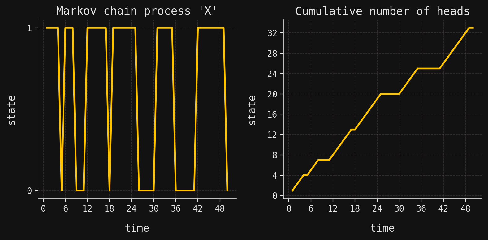
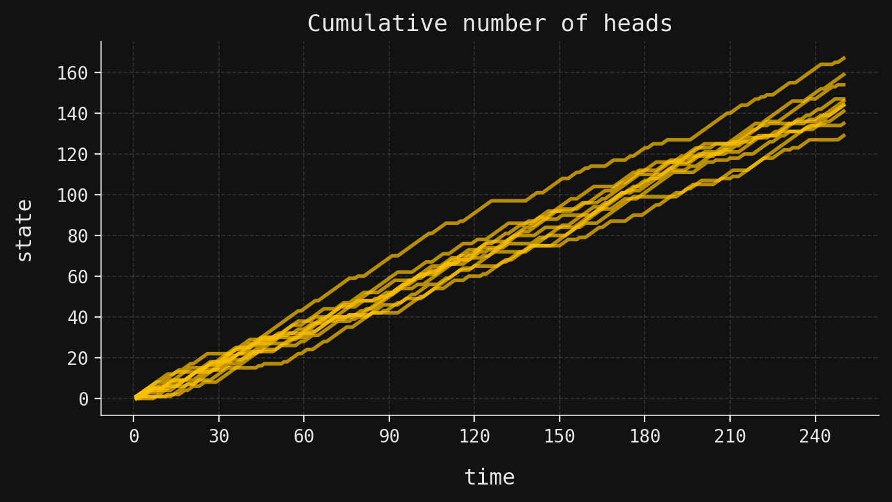

SigAlg II: Conditional expectations and \(L^2\)-spaces
Conditional expectations
Hilbert spaces
L2 spaces
Probability theory
Sigma algebras
Filtrations
Information theory
SigAlg
Python
Introduction
In this post we explore the relationship between random variables, algebras of sets, and Hilbert spaces. We begin by showing how random variables induce algebras of observable events through their level sets, and we characterize the refinement relations between these algebras in terms of the behavior of the random variables on the atoms of pre-existing algebras. Next, we introduce the \(L^2\)-spaces associated to algebras of sets, demonstrating that these spaces are Hilbert spaces with inner products defined via expectation. Finally, we connect the refinement of algebras to the nesting of their corresponding \(L^2\)-spaces, providing a geometric perspective on information refinement.
Random variables as information carriers
First, we set the scene and recall a few concepts from basic probability theory. We let \(\Omega\) be a finite set, conceptualized as the set of outcomes of an experiment. We call \(\Omega\) a sample space. A \(\sigma\)-algebra of sets \(\mathcal{F}\) in \(\Omega\) is a collection of subsets of \(\Omega\) that contains \(\Omega\) and is closed under complements and unions. These structures capture information about which events can be observed in the experiment: if a subset \(A \in \mathcal{F}\), then the event \(A\) is observable, meaning that an observer can determine whether the outcome \(\omega \in A\) or not. The class of all \(\sigma\)-algebras on \(\Omega\) may be partially ordered by the refinement relation: a \(\sigma\)-algebra \(\mathcal{F}\)refines another \(\sigma\)-algebra \(\mathcal{G}\) if \(\mathcal{G}\subset \mathcal{F}\). In this case, \(\mathcal{F}\) contains at least as much information as \(\mathcal{G}\), since every event observable in \(\mathcal{G}\) is also observable in \(\mathcal{F}\).
A function \(X:\Omega \to \mathbb{R}\), called a random variable, also carries information. It induces a \(\sigma\)-algebra through its level sets, which are the preimages of singletons in \(\mathbb{R}\). To describe these more generally, in what follows, it will be convenient to allow the codomain of \(X\) to be an arbitrary finite-dimensional euclidean space \(\mathbb{R}^n\), not just \(\mathbb{R}\), in which case a function \(X:\Omega \to \mathbb{R}^n\) is often called a random vector. The integer \(n\) is called the dimension of the random vector, and so a random variable is just a random vector of dimension 1.
Definition 1 Let \(X:\Omega\to \mathbb{R}^n\) be a random vector on a finite set \(\Omega\). For \(x\in \mathbb{R}^n\), sets of the form
As you may easily check, the nonempty level sets of a random vector \(X\) partition its domain, and through this partition the random vector generates a \(\sigma\)-algebra of sets in \(\Omega\) denoted \(\sigma(X)\). The level sets are the atoms of this \(\sigma\)-algebra, i.e., they are the minimal nonempty sets in \(\sigma(X)\). The \(\sigma\)-algebra \(\sigma(X)\) captures precisely the information an observer gains by learning the values of \(X\). If the observer knows \(X(\omega) = x\), then they know that \(\omega\) is contained in the level set \(X^{-1}(x)\), but they cannot distinguish between outcomes within this level set. Thus, \(\sigma(X)\) represents the coarsest partition of \(\Omega\) consistent with the information provided by \(X\).
More generally, we may construct a \(\sigma\)-algebra induced by a sequence of random vectors:
Definition 2 Let \(X_1,X_2,\ldots,X_m\) be random vectors on a finite set \(\Omega\). The algebra generated by \(X_1,X_2,\ldots,X_m\) is the algebra of sets in \(\Omega\), denoted by \(\sigma(X_1,X_2,\ldots,X_m)\), whose atoms are all nonempty intersections of the form \[
\bigcap_{i=1}^m X_i^{-1}(x_i).
\]
If we are given a finite set of random variables \(X_1,X_2,\ldots,X_n\) as in the definition, then we may form the \(n\)-dimensional random vector
Then the \(\sigma\)-algebra generated by \(X_1,X_2,\ldots,X_n\) is simply the \(\sigma\)-algebra generated by the random vector \(X\):
\[
\sigma(X_1,X_2,\ldots,X_n) = \sigma(X).
\]
Let’s see how to construct random vectors and variables in SigAlg. In the following code block, we will implement the \(2\)-dimensional random vector \[
X: \Omega \to \mathbb{R}^2, \quad X(\omega) = \begin{cases}
(1, 2) & : \omega = 1, \\
(3, 4) & : \omega = 2, \\
(1, 2) & : \omega = 3, \\
(5, 6) & : \omega = 4,
\end{cases}
\]
In the printout, we see that the data columns are indexed by X_0 and X_1, corresponding to the two component random variables of the random vector. The rows are indexed by the sample points in \(\Omega\).
The component random variables may be easily extracted using the appropriate method:
X_0 = X.get_component_rv("X_0")print(X_0)
Random variable 'X_0':
X_0
sample
1 1
2 3
3 1
4 5
Random vectors and variables are functions, which is reflected in their implementation in SigAlg by making both types of objects callable:
print("Calling a random vector returns a feature vector:")print(X(1))print("\nCalling a random variable returns a scalar:")print("X_0(2) = ", X_0(2))
Calling a random vector returns a feature vector:
Feature vector of '1':
1
feature
X_0 1
X_1 2
Calling a random variable returns a scalar:
X_0(2) = 3
The \(\sigma\)-algebras \(\sigma(X)\) and \(\sigma(X_0)\) may be obtained through the sigma_algebra attribute:
Sigma algebra 'sigma(X)':
atom ID
sample
1 (1, 2)
2 (3, 4)
3 (1, 2)
4 (5, 6)
Sigma algebra 'sigma(X_0)':
atom ID
sample
1 1
2 3
3 1
4 5
The printout shows the atom identifier for each sample point in \(\Omega\). Recall that, in SigAlg, \(\sigma\)-algebras are implemented by tracking the atom of the \(\sigma\)-algebra to which each sample point belongs. For \(\sigma\)-algebras induced by random vectors, the atom identifiers are taken to be the function values of the random vector itself.
We saw above that we have the equality \[
\sigma(X_0, X_1) = \sigma(X)
\]
of \(\sigma\)-algebras. Let’s verify this equality in SigAlg. First, let’s get the second component random variable:
Sigma algebra 'sigma(X_1)':
atom ID
sample
1 2
2 4
3 2
4 6
Now, to manufacture \(\sigma(X_0,X_1)\) from the individual \(\sigma\)-algebras \(\sigma(X_0)\) and \(\sigma(X_1)\), we use the join function:
from sigalg.core import joinsigma_X0_X1 = join([X_0.sigma_algebra, X_1.sigma_algebra]).with_name("sigma(X_0,X_1)")print(sigma_X0_X1)
Sigma algebra 'sigma(X_0,X_1)':
atom ID
sample
1 (1, 2)
2 (3, 4)
3 (1, 2)
4 (5, 6)
Note that this \(\sigma\)-algebra is exactly the same as \(\sigma(X)\), confirming the equality above.
Measurability
Very often the sample space \(\Omega\) comes equipped with a pre-existing \(\sigma\)-algebra \(\mathcal{F}\) of observable events. Given a random vector \(X\) on \(\Omega\), it is then natural to ask how the information encoded in \(\sigma(X)\) relates to that in \(\mathcal{F}\). The first possiblity is that neither algebra refines the other, meaning that \(\sigma(X)\) and \(\mathcal{F}\) contain different kinds of information. The other possibilities are that one algebra refines the other, meaning that one contains at least as much information as the other. The following theorem characterizes these refinement relations in terms of the behavior of \(X\) on the atoms of \(\mathcal{F}\).
Theorem 1 (Random variables and refinements) Let \(\mathcal{F}\) be an algebra of sets in a finite set \(\Omega\), and let \(X:\Omega \to \mathbb{R}^n\) be a random vector.
The algebra \(\mathcal{F}\) refines \(\sigma(X)\) (equivalently, \(\sigma(X) \subset \mathcal{F}\)) if and only if \(X\) is constant on every atom in \(\mathcal{F}\).
The algebra \(\sigma(X)\) refines \(\mathcal{F}\) (equivalently, \(\mathcal{F}\subset \sigma(X)\)) if and only if every atom in \(\mathcal{F}\) is a union of level sets of \(X\).
NoteProof.
The algebra \(\mathcal{F}\) refines \(\sigma(X)\) if and only if every nonempty level set is a union of atoms in \(\mathcal{F}\). This proves the result in the first statement. A symmetric argument using the same theorem proves the second statement.
Random vectors satisfying the first condition in Theorem 1 arise frequently enough to warrant their own terminology.
Definition 3 Let \(\mathcal{F}\) be an algebra of sets in a finite set \(\Omega\). A random vector \(X\) on \(\Omega\) will be called \(\mathcal{F}\)-measurable if \(\mathcal{F}\) refines the algebra \(\sigma(X)\), i.e., \(\sigma(X) \subset \mathcal{F}\).
Returning to our coin-flipping scenario, we see that \(Y\) is only\(\mathcal{F}_3\)-measureable, since the atoms in this algebra are the only ones on which \(Y\) is constant. (Of course, \(\mathcal{F}_3\) is the power set of \(\Omega\).) The information afforded by \(Y\) is not comparable to that of \(\mathcal{F}_1\) or \(\mathcal{F}_2\), since there are no subset containments between \(\sigma(Y)\) and \(\mathcal{F}_1\) or \(\mathcal{F}_2\).
If \(X\) and \(Y\) are both random vectors on \(\Omega\), then we may compare the information they encode by comparing their algebras \(\sigma(X)\) and \(\sigma(Y)\). Then Theorem 1 tells us when one algebra refines the other, but not how the vectors relate. The next theorem provides this missing piece: refinement is equivalent to functional dependence.
Theorem 2 (Functional representation) Let \(X\) and \(Y\) be two \(\mathbb{R}^n\)-valued random vectors on a finite set \(\Omega\). The following statements are equivalent:
The algebra \(\sigma(Y)\) refines \(\sigma(X)\).
There exists a function \(f:\mathbb{R}^n \to \mathbb{R}^n\) such that \(X = f \circ Y\).
Theorem 2 holds for general measurable spaces, not just finite sets. The proof requires the Doob-Dynkin lemma and properties of \(\sigma\)-algebras. See Lemma 1.14 in Kallenberg (2021) for the general statement and proof. Our finite setting allows a more elementary approach.
NoteProof.
Suppose that \(\sigma(Y)\) refines \(\sigma(X)\) and write
\[
X = \sum_{i=1}^m x_i I_{A_i} \quad \text{and} \quad Y = \sum^n_{j=1} y_j I_{B_j},
\]
where \(I_{A_i}\) and \(I_{B_j}\) are indicator functions for the level sets
Since \(B_j\) and \(\omega\) were chosen arbitrarily, this proves that (1) implies (2).
To prove the converse, suppose that \(X = f \circ Y\) for some function \(f:\mathbb{R}\to \mathbb{R}\). To prove that \(\sigma(Y)\) refines \(\sigma(X)\), by Theorem 1 it will suffice to show that every level set of \(Y\) is contained in a level set of \(X\). So, let \(y \in \mathbb{R}\) and consider the level set \(B = Y^{-1}(y)\). If \(B\) is nonempty, then for every \(\omega \in B\), we have \(X(\omega) = f(Y(\omega)) = f(y)\). Thus, \(B \subset X^{-1}(f(y))\), and the proof is complete.
Example: a coin with momentum
Let’s explore these ideas with a concrete example in a “coin flip with momentum” experiment. This means that we observe a sequence of coin flips where the outcome (head or tail) of each flip depends on the outcome of the previous flip, introducing a “momentum” or “inertia” effect. Specifically, if the previous flip was a head, the current coin is more likely to land heads again, and similarly for tails.
This experiment can be modeled in SigAlg using a Markov chain. To do this, we first begin with the state space:
states = SampleSpace( name="states", data_name="state",).from_sequence(size=2)print(states)
Sample space 'states':
[0, 1]
We write \(X_t\) for the outcome of the \(t\)-th coin flip, where \(X_t = 1\) represents heads and \(X_t = 0\) represents tails. We assume that the first coin is unbiased, so that
\[
P(X_1=1) = P(X_1 = 0) = 0.5.
\]
In the terminology of Markov chains, this is called the initial distribution and is often written as \(\pi\). In SigAlg, we write:
so that if the previous flip was a head, the current coin is more likely to land heads again, and similarly for tails. (This is exactly the “momentum” effect we described above.) The transition matrix \(K\) is implemented in SigAlg as follows:
Suppose that we flip the coin four times, producing a Markov chain \(X = (X_1,X_2,X_3,X_4)\) on the index set \(T = \{1,2,3,4\}\). Since there are two states and four flips, there are \(2^4 = 16\) possible trajectories:
But Markov chains have the Markov property, which states that the conditional probability of the next state depends only on the current state, not on the sequence of past states. This simplifies the joint probability:
probability = X.probability_measure(13)print(round(probability, 3))
0.024
We can simulate longer chains of coin flips using this Markov chain model. Below, we simulate a single trajectory of length 50 and plot the individual coin flip outcomes as well as the cumulative number of heads over time.
import matplotlib.pyplot as pltplt.style.use("../../aux-files/custom-theme.mplstyle")T = Time.discrete(start=1, stop=50)X.time = TX.from_simulation(n_trajectories=1, random_state=42)_, axes = plt.subplots(ncols=2, figsize=(8, 4))X.plot_trajectories(ax=axes[0])X.cumsum().plot_trajectories(ax=axes[1], title="Cumulative number of heads")plt.tight_layout()plt.show()

We can also simulate multiple trajectories to see how the number of heads varies across different runs of the experiment. Below, we simulate 10 chains of length 250 and plot the cumulative number of heads for each simulation.
yellow ="#FFC300"T = Time.discrete(start=1, stop=250)X.time = TX.from_simulation(n_trajectories=10, random_state=42)_, ax = plt.subplots(figsize=(7, 4))X.cumsum().plot_trajectories( ax=ax, colors=[yellow], title="Cumulative number of heads", plot_kwargs={"alpha": 0.7},)plt.tight_layout()plt.show()

Hilbert spaces of random variables
We’ve seen how random variables encode information through the algebras they generate. But random variables also have numerical values, which allows us to perform algebraic operations: we can add them, multiply them by scalars, and compute their expected values. This algebraic structure becomes particularly rich when we introduce an inner product, turning the space of random variables into a Hilbert space. This latter structure provides a geometric perspective on random variables, where concepts like orthogonality, projection, and distance become meaningful. This perspective will prove essential for understanding conditional expectation, which emerges naturally as orthogonal projection onto subspaces determined by algebras.
First, we recall that the pointwise sum and scalar multiple of random variables are again random variables, and these operations have the usual properties of commutativity, associativity, etc. Thus, the set of all random variables on a finite set \(\Omega\) forms a vector space over the real numbers \(\mathbb{R}\). The subspaces of this vector space that are most relevant to us are those consisting of random variables that are measurable with respect to a given algebra of sets.
We shall also need the concept of expectation of a measurable random variable. If \((\Omega,\mathcal{F},P)\) is a finite probability space and \(X:\Omega \to \mathbb{R}\) is a random variable, then the expectation of \(X\) is defined as
\[
E(X) \overset{\text{def}}{=}\int_\Omega X \ dP,
\tag{1}\]
where the integral on the right is the Lebesgue integral with respect to the probability measure \(P\). In the finite setting, this integral reduces to the familiar weighted average of the values of the random variable, where the weights are the probabilities of the level sets of \(X\):
The benefit of using the Lebesgue integral (1) to define expectation is that it generalizes directly to “continuous” sample spaces equipped with probability measures on \(\sigma\)-algebras. In that more general setting, expectation cannot be defined as a simple finite weighted sum as in (2), though it remains a Lebesgue integral. Thus, the Lebesgue integral allows us to treat both discrete and continuous probability theory in a unified manner.
\[
\int_\Omega X \ dP = \sum_{i=1}^m x_i P(A_i),
\tag{2}\]
where \(A_1, A_2, \ldots, A_m\) are the level sets of \(X\) and \(x_i\) is the value of \(X\) on \(A_i\). Note that in order for the probability \(P(A_i)\) to be defined, we must have \(A_i \in \mathcal{F}\), which is guaranteed if \(X\) is \(\mathcal{F}\)-measurable.
Finally, two \(\mathcal{F}\)-measurable random variables \(X\) and \(Y\) on \((\Omega,\mathcal{F},P)\) will be said to be equal almost surely if
Almost sure equality is an equivalence relation on the set of \(\mathcal{F}\)-measurable random variables.
With these ingredients in place, we may now define the \(L^2\)-space associated to an algebra of sets on a finite sample space.
Definition 4
Let \((\Omega,\mathcal{F},P)\) be a finite probability space. We write \(L^2(\Omega,\mathcal{F},P)\) for the set of all \(\mathcal{F}\)-measurable random variables \(X:\Omega \to \mathbb{R}\), where two random variables are identified if they are equal almost surely. When the set \(\Omega\) and the measure \(P\) are understood from context, we will abbreviate \(L^2(\Omega,\mathcal{F},P)\) as \(L^2(\mathcal{F})\).
The \(L^2\) notation is borrowed from the case of a general sample space \(\Omega\) equipped with a probability measure \(P\) on a \(\sigma\)-algebra \(\mathcal{F}\). In that case, \(L^2(\Omega,\mathcal{F},P)\) consists of all (equivalence classes of) \(\mathcal{F}\)-measurable random variables \(X:\Omega \to \mathbb{R}\) such that \(E(X^2) < \infty\). In our finite setting, this condition on the expectation of \(X^2\) is automatically satisfied.
So, technically \(L^2(\mathcal{F})\) is a set of equivalence classes of \(\mathcal{F}\)-measurable random variables, but for ease of exposition and notation we will often refer to elements of \(L^2(\mathcal{F})\) as if they were random variables themselves. This will not cause too much confusion.
One should check that \(L^2(\mathcal{F})\) is indeed a vector subspace of the vector space of all random variables on \(\Omega\), which amounts to checking that sums and scalar multiples of \(\mathcal{F}\)-measurable random variables are again \(\mathcal{F}\)-measurable. We will leave this task to the interested reader.
Beyond inducing equivalence classes under almost sure equality, the probability measure \(P\) plays no role in the definition of \(L^2(\mathcal{F})\) itself. However, it does define an inner product on this space via expectation:
Theorem 3 (\(L^2\)-spaces are Hilbert spaces)
Let \((\Omega,\mathcal{F},P)\) be a finite probability space. The map \[
\langle -, - \rangle : L^2(\mathcal{F}) \times L^2(\mathcal{F}) \to \mathbb{R}, \quad \langle X, Y \rangle = E(XY)
\] defines an inner product on \(L^2(\mathcal{F})\).
A Hilbert space is a complete inner product space. Since \(L^2(\mathcal{F})\) is finite-dimensional (see below), it is automatically complete, so the existence of an inner product suffices to make it a Hilbert space.
Using the Lebesgue integral notation, the inner product can be written as
One should check that \(\langle -, -\rangle\) satisfies the properties of an inner product: linearity in the first argument, symmetry, and positive-definiteness. Again, we shall leave this task to the interested reader. We only note that the proof of positive-definiteness involves showing that \(\langle X,X\rangle=0\) if and only if \(X\) is almost surely equal to the zero random variable. Remember that elements in \(L^2(\mathcal{F})\) are equivalence classes under almost sure equality!
The inner product induces a norm
\[
\|X\|_2 = \sqrt{\langle X, X \rangle} = \sqrt{E(X^2)},
\]
which measures the “magnitude” of a random variable. This is precisely the so-called \(L^2\)-norm, and the corresponding metric \(d(X, Y) = \|X - Y\|_2\) measures the mean-squared distance between random variables. In statistics, this is the root mean squared error (RMSE) between \(X\) and \(Y\).
When algebras are nested, their corresponding \(L^2\)-spaces are nested as well:
Theorem 4 Let \((\Omega, \mathcal{F}, P)\) be a finite probability space. If \(\mathcal{G} \subset \mathcal{H}\) are two subalgebras of \(\mathcal{F}\), then \[
L^2(\mathcal{G}) \subset L^2(\mathcal{H}) \subset L^2(\mathcal{F}).
\]
Moreover, these subset inclusions are ones of vector subspaces.
NoteProof.
Since \(\mathcal{G} \subset \mathcal{H}\), every \(\mathcal{G}\)-measurable random variable is also \(\mathcal{H}\)-measurable. Thus, \(L^2(\mathcal{G}) \subset L^2(\mathcal{H})\). A symmetric argument shows that \(L^2(\mathcal{H}) \subset L^2(\mathcal{F})\). The fact that these inclusions are ones of vector subspaces follows from the fact that sums and scalar multiples of measurable random variables are measurable with respect to the same algebra.
This geometric picture connects directly to information refinement: as algebras refine (capturing more information), their \(L^2\)-spaces expand in kind (allowing more functions to be represented). Applied to our coin-flip example the nested sequence
of \(L^2\)-spaces, where each larger subspace represents more refined information about the outcomes.
Finally, we note that the \(L^2\)-spaces associated to algebras have particularly simple and useful orthogonal bases, consisting of indicator functions of the atoms of the algebra. Issues arise when atoms have zero probability, but these are easily handled by working with equivalence classes under almost sure equality.
Theorem 5 (Bases of \(L^2\)-spaces) Let \((\Omega,\mathcal{F},P)\) be a finite probability space, let \(\mathcal{G}\) be a subalgebra of \(\mathcal{F}\), and let \(B_1, B_2, \ldots, B_m\) be the atoms of \(\mathcal{G}\) with positive probability.
The indicator functions \(I_{B_1}, I_{B_2}, \ldots, I_{B_m}\) form an orthogonal basis of \(L^2(\mathcal{G})\).
The \(L^2\)-norm of \(I_{B_i}\) is \(\sqrt{P(B_i)}\).
The vector space dimension of \(L^2(\mathcal{G})\) is equal to the number of atoms in \(\mathcal{G}\) with positive probability.
where the sets \(B_{m+1},B_{m+2},\ldots,B_n\) are the atoms of \(\mathcal{G}\) with zero probability (which may not exist). Let \(X\in L^2(\mathcal{G})\) be a random variable. Since \(X\) is \(\mathcal{G}\)-measurable, it is constant on each atom in \(\mathcal{G}\). Thus, we may write
\[
X = \sum_{i=1}^n x_i I_{B_i},
\]
for some values \(x_i \in \mathbb{R}\) (not necessarily distinct). However, since \(P(B_i) = 0\) for \(i = m+1, m+2, \ldots, n\), we have
\[
X = \sum_{i=1}^m x_i I_{B_i}
\]
almost surely. Thus, since elements in \(L^2(\mathcal{G})\) are technically equivalence classes under almost sure equality, we have that \(X\) is a linear combination of the indicator functions \(I_{B_1}, I_{B_2}, \ldots, I_{B_m}\). Thus, these indicator functions span \(L^2(\mathcal{G})\). To see that they are orthogonal, we suppose \(i\neq j\). Then, \(B_i \cap B_j =\emptyset\), and so
Orthogonality implies linear independence, so the proof is complete.
Conditional expectations as projections
Definition 5 Let \((\Omega, \mathcal{F}, P)\) be a finite probability space, \(\mathcal{G} \subset \mathcal{F}\) a subalgebra, and \(X \in L^2(\mathcal{F})\) a random variable. A conditional expectation of \(X\) given \(\mathcal{G}\) is a random variable \(E(X\mid \mathcal{G}) \in L^2(\mathcal{G})\) such that
for all \(B \in \mathcal{G}\). This is called the averaging property of conditional expectation.
Any two conditional expectations of \(X\) given \(\mathcal{G}\) are almost surely equal, so the conditional expectation is unique up to almost sure equality. A particular choice of conditional expectation is called a version.
The averaging property (4) defines conditional expectation abstractly, but doesn’t immediately suggest how to compute it. The key insight is that this property has a geometric interpretation. To uncover it, we rewrite the averaging property as
Since the indicator functions \(\{I_B : B \in \mathcal{G}\}\) span \(L^2(\mathcal{G})\) (by Theorem 5), the residual \(X - E(X \mid \mathcal{G})\) is orthogonal to every element of \(L^2(\mathcal{G})\). Thus, conditional expectation \(E(X\mid \mathcal{G})\) is characterized as the orthogonal projection of \(X\) onto the subspace \(L^2(\mathcal{G})\).
Computing this projection is straightforward. Let \(B_1,B_2,\ldots,B_m\) be the atoms of \(\mathcal{G}\) with positive probability. By Theorem 5, the normalized indicator functions
form an orthonormal basis of \(L^2(\mathcal{G})\). The conditional expectation of \(X\) given \(\mathcal{G}\) is the orthogonal projection onto this basis:
where \(P(A_j \mid B_i) = P(A_j \cap B_i)/P(B_i)\) is the conditional probability of \(A_j\) given \(B_i\). This formula connects our geometric framework to the elementary definition of conditional probability.
We summarize this projection interpretation in the following theorem:
Theorem 6 (Conditional expectation as orthogonal projection) Let \((\Omega, \mathcal{F}, P)\) be a finite probability space, \(\mathcal{G} \subset \mathcal{F}\) a subalgebra, and \(X \in L^2(\mathcal{F})\) a random variable. Then, the orthogonal projection of \(X\) onto the subspace \(L^2(\mathcal{G})\) is a conditional expectation of \(X\) given \(\mathcal{G}\). This projection is given by Equation 6.
So, given an \(\mathcal{F}\)-measurable random variable \(X\) and a coarser algebra \(\mathcal{G}\), we may trivially write
This decomposition gives us two components: a \(\mathcal{G}\)-measurable part \(E(X\mid \mathcal{G})\) that captures all information in \(X\) knowable from \(\mathcal{G}\), and a residual \(X - E(X \mid \mathcal{G})\) orthogonal to every \(\mathcal{G}\)-measurable random variable, representing pure noise relative to \(\mathcal{G}\).
In the case that \(\mathcal{G}= \{\emptyset, \Omega\}\) is the trivial algebra, we have
\[
E(X \mid \mathcal{G}) = E(X),
\]
the constant random variable (taking value \(E(X)\) everywhere). The trivial algebra represents having no information at all, so the best prediction of \(X\) without any information is simply its expectation.
The fact that \(E(X \mid \mathcal{G})\) is the “best” \(\mathcal{G}\)-measurable approximation to \(X\) can be made numerically precise, as in the following theorem:
Theorem 7 (Best \(L^2\)-approximation) Let \((\Omega, \mathcal{F}, P)\) be a finite probability space, \(\mathcal{G} \subset \mathcal{F}\) a subalgebra, and \(X \in L^2(\mathcal{F})\) a random variable. Then,
This follows directly from the fact that orthogonal projection minimizes distance in inner product spaces. See, for example, Proposition 6.36 in (Axler 1997).
Beyond optimality, the projection interpretation of conditional expectation immediately yields several other important properties, which we now develop.
Theorem 8 (Linearity of conditional expectation) Let \((\Omega, \mathcal{F}, P)\) be a finite probability space, \(\mathcal{G} \subset \mathcal{F}\) a subalgebra, and \(X, Y \in L^2(\mathcal{F})\) random variables. For any scalars \(a,b \in \mathbb{R}\), we have \[
E(aX + bY \mid \mathcal{G}) = a E(X \mid \mathcal{G}) + b E(Y \mid \mathcal{G})
\]
almost surely.
NoteProof.
Choose the version of conditional expectation given by orthogonal projection onto \(L^2(\mathcal{G})\) as in Theorem 6. Since orthogonal projection is linear, the desired result follows immediately.
Linearity tells us that conditional expectation behaves well under linear combinations. But what happens when we condition on the product \(XY\) of two random variables? If \(Y\) is already \(\mathcal{G}\)-measurable, then \(Y\) is “known” given the information in \(\mathcal{G}\), so it should factor out of the conditional expectation. This intuition is formalized by the following property:
Theorem 9 (Pull-out property) Let \((\Omega, \mathcal{F}, P)\) be a finite probability space, \(\mathcal{G} \subset \mathcal{F}\) a subalgebra, and \(X \in L^2(\mathcal{F})\) a random variable. If \(Y\) is a \(\mathcal{G}\)-measurable random variable,
\[
E(XY \mid \mathcal{G}) = Y E(X \mid \mathcal{G}).
\]
NoteProof.
We will prove that the random variable \(Y E(X \mid \mathcal{G})\) has the defining property of a conditional expectation of \(XY\) given \(\mathcal{G}\). To this end, we let \(B\) be a set in \(\mathcal{G}\). Then \(YI_B\) is \(\mathcal{G}\)-measurable, so that if we choose the version of \(E(X\mid \mathcal{G})\) given by orthogonal projection onto \(L^2(\mathcal{G})\) as in Theorem 6, we must have
\[
\langle X - E(X \mid \mathcal{G}), Y I_B \rangle = 0.
\]
However, this inner product is
\[
\langle X - E(X \mid \mathcal{G}), Y I_B \rangle = \int_B \left[XY - Y E(X \mid \mathcal{G})\right] \ dP,
\]
The pull-out property shows that \(\mathcal{G}\)-measurable factors can be extracted from conditional expectations. But what happens when we have a nested sequence of algebras \(\mathcal{G} \subset \mathcal{H} \subset \mathcal{F}\), representing increasingly refined information states?
Intuitively, if we first condition on the finer information \(\mathcal{H}\) and then “forget” some information by conditioning on the coarser \(\mathcal{G}\), we should get the same result as conditioning directly on \(\mathcal{G}\). This is the content of the following property (also called the law of iterated expectations):
Theorem 10 (Tower property) Let \((\Omega, \mathcal{F}, P)\) be a finite probability space, and let \(\mathcal{G} \subset \mathcal{H} \subset \mathcal{F}\) be subalgebras. If \(X \in L^2(\mathcal{F})\) is a random variable, then
If we choose the versions of the conditional expectations given by orthogonal projection as in Theorem 6, then the left-hand side of (7) is the orthogonal projection of \(X\) onto \(L^2(\mathcal{H})\) followed by the orthogonal projection onto \(L^2(\mathcal{G})\). However, since the subspaces are nested, this composition is simply the orthogonal projection of \(X\) onto \(L^2(\mathcal{G})\), which is the right-hand side of the desired equation.
Return to the coin flip with momentum
Code
# mc.generate_sample_space(trajectory_length=4)# print_html_df(df=mc.omega, title="probability space for coin flips with momentum")
Code
# Define the random variable S3 = X1 + X2 + X3# def S3(omega):# return omega["X1"] + omega["X2"] + omega["X3"]# Compute the conditional expectation of S3 given X1 and X2# cond_exp_S3_given_X1X2 = conditional_exp(# omega=mc.omega, RV=S3, sigma_algebra=["X1", "X2"], name="E(S3 | X1, X2)"# )# Print the conditional expectation# print_html_df(# df=cond_exp_S3_given_X1X2,# title="conditional expectation E(S3 | X1, X2)",# )
We have a submartingale!
Code
# Define the random variable S2 = X1 + X2# def S2(omega):# return omega["X1"] + omega["X2"]# Make a copy of the sample space and compute S2# omega = mc.omega.copy()# omega["S2"] = omega.apply(S2, axis=1)# S2 is constant on the atoms of sigma(X1, X2), so we group# by X1 and X2 and get unique values of S2 by using first(). Then# we convert to a dataframe and turn the multi-index into columns.# S2 = omega.groupby(["X1", "X2"])["S2"].first().to_frame().reset_index()# Print the comparison of E(S3 | X1,X2) to S2# print_html_df(# df=cond_exp_S3_given_X1X2.merge(S2, on=["X1", "X2"]),# title="comparing E(S3 | X1,X2) to S2",# )
References
Axler, S. 1997. Linear Algebra Done Right. Second. Undergraduate Texts in Mathematics. Springer.
Kallenberg, O. 2021. Foundations of Modern Probability. Third. Vol. 99. Probability Theory and Stochastic Modelling. Springer.